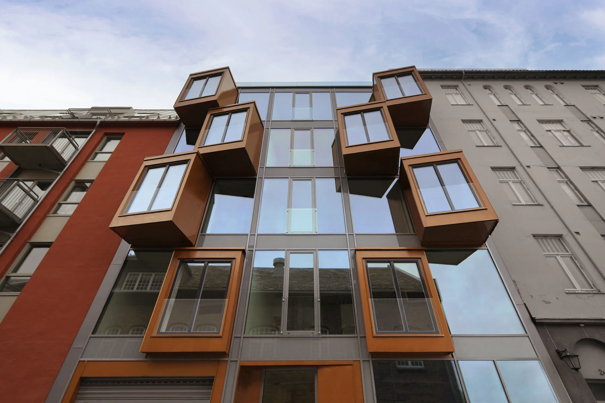
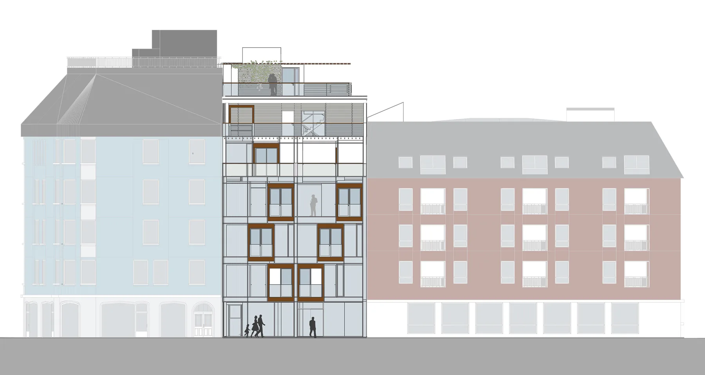
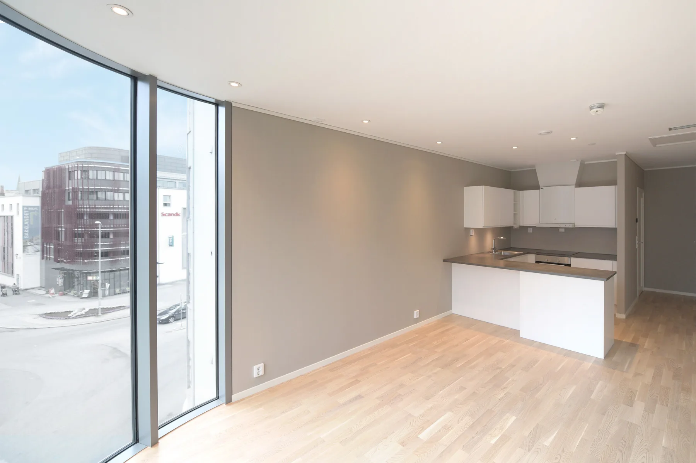
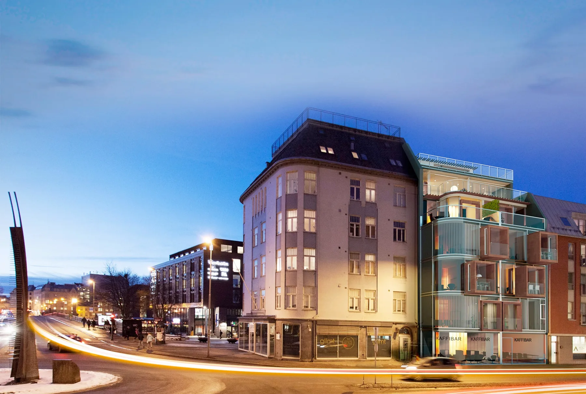

Verftsgata 1C
29Infill-prosjekt i Trondheim sentrum
Bolig · fritid · Nybygg · Interiør · Næring · kontorSe bildegalleri

- Byggherre
- HAW Eiendom AS
- Byggeår
- 2018
- Medarbeidere
- Jan-Kristian Orvik, Rita Morken, Gunnar Stenberg, Heiei K. Hynne, Hans Karsten Myhre
Om prosjektet
En smal tomt mellom to bygårder er utnyttet til 21 leiligheter og næring på gateplan. Store vindusflater, integrerte balkonger og felles takterrasser gir lys og utsyn i et tett bymiljø.
Bilder & tegninger4 bilder



Forstørr

Forstørr

ForstørrLa oss begynne med en samtale